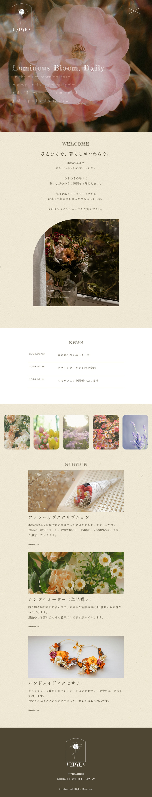

Website ｜ 自主制作
Undyra flower shop
「社会の誰かが喜ぶサイト」をテーマに フラワーロスの社会問題に貢献しながら 情報社会に疲れてしまった人たちへ癒しを届けられるサイトを制作しました。
お店の世界観を感じていただきながら、必要な情報にアクセスしやすいデザインを目指しました。

ペルソナ
20代前半の社会人になったばかりで疲れている女性。
丁寧な暮らしに憧れてSNSで情報収集中。
丁寧な暮らしに憧れてSNSで情報収集中。
クライアントの悩み
SNSの運営のみだとお客様に安心感を持っていただけない。
興味のある方にフラワーロスについても知っていただきたい。
興味のある方にフラワーロスについても知っていただきたい。
目的
提供サービスが一目でわかるようにし、オンラインショップの利用を促進する。
実店舗の場所やお問い合わせのページを作り、お店の信用性をアップする。
実店舗の場所やお問い合わせのページを作り、お店の信用性をアップする。
情報設計のこだわり
ナビを固定し、見たい情報にすぐたどり着けるように設計しました。
ABOUT USのページにはフラワーロスについても触れています。
環境問題は時として押しつけがましく感じられてしまうため、興味のある方にご覧いただけるようアコーディオン方式を採用しています。
デザインのこだわり
SNSからのアクセスを想定し、スマホに最適化したウェブサイトを作成しました。 背景に紙の質感をプラスし、全体を花束に見立ててデザインしています。
文字は優雅に、余白を多めにすることで、お洒落でゆとりのある空間を目指しました。
制作期間
企画2週間
デザイン1週間
コーディング1週間